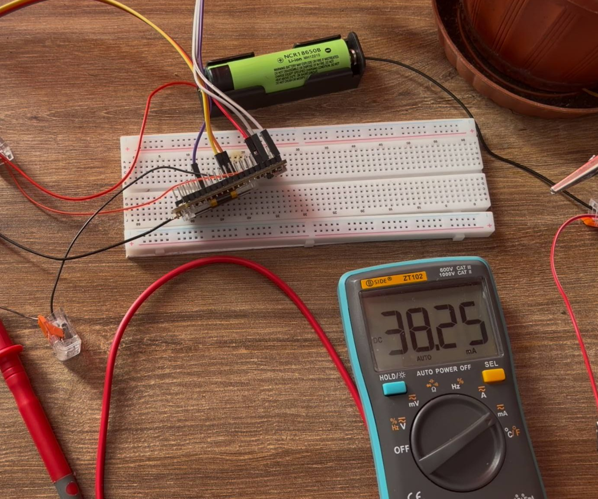
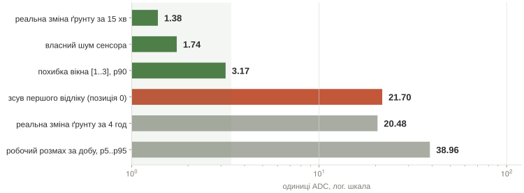
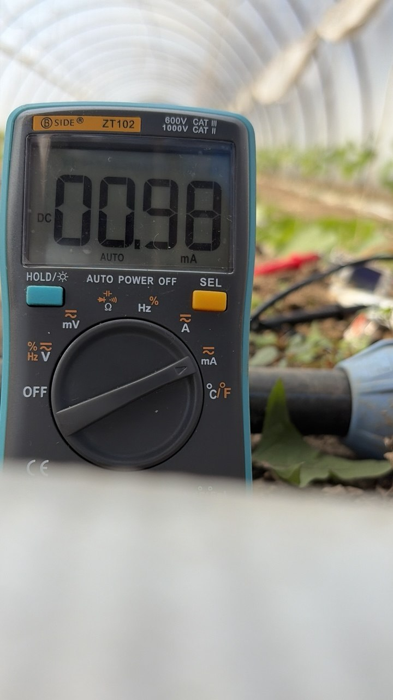
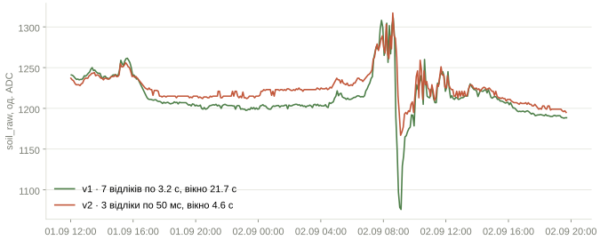
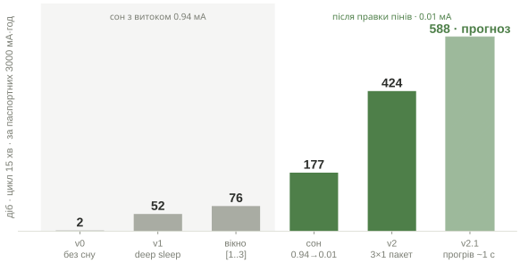
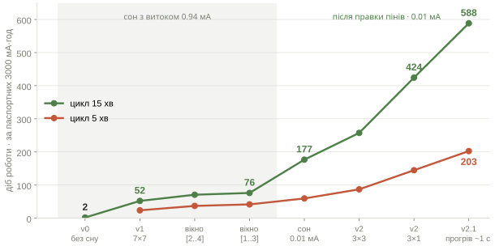

Три шляхи: більше живлення, рідші виміри, програмна оптимізація. Почав з найдешевшого, що не ламає ідею. Історія далі не про те, що зробили, а про те, у чому помилялись, поки не заміряли.
1 · оптимізація без профілювання2 / 8

38.25 mA · мультиметр у розриві · вузол не спить
38 мАцілодобово
Процесор, який ніколи не спить, їсть більше за екран, сенсори й радіо разом.
перша спробавимкнув OLED, найпомітніший (~10 мА). Майже нічого не змінилось.замірмультиметр у розрив живлення: CPU без сну 38 мА, весь вузол 69 мА.урокспершу профілюй, потім оптимізуй найбільшу статтю. Жодне вимикання дрібниць цього не лікує.
OLED ~10 мАCPU 38 мАрішення: deep sleep, прокидатись лише на вимір
docs/дослідження/power-budget.mdдеякі дні коштувала оптимізація навмання
Дух закону Амдала: виграш обмежений часткою, яку оптимізуєш. ESP32 має deep sleep з одиницями мікроампер на самому чипі. Ресерч завершено, план є. Але перш ніж будувати все на duty cycling, треба довести, що інтервальні виміри не гірші за безперервні.
2 · чи не псує сон дані3 / 8
442з 442
Перший відлік після подачі живлення занижений на 22 одиниці. Без жодного винятку.
Два вузли на одній грядці, щупи за 2 см. Опорний шле безперервно, інтервальний прокидається раз на 5 хв і знімає 7 точок. Це не шум, а прогрів: точку 0 викидаємо, наступна вже в нормі.
Сім точок з розкидом у часі навмисно: вимірювальна сітка, щоб потім визначити, які точки дають найкращий сигнал і скільки їх треба. Абсолютні рівні двох щупів у різних дірках різні, порівнюємо динаміку. Пакети губляться: 3.1% бурстів за чисту добу, тому фінальне вікно має нести 3 точки, не 2.
3 · що кажуть 45 тисяч рядків4 / 8
Ґрунт за 15 хвилин міняється менше, ніж сенсор шумить за секунду.

зміна за 15 хв
1.38
медіана, од. ADC
шум сенсора
1.74
σ, усталений режим
перший відлік
21.7
зсув, позиція 0
наслідок 1інтервал 5–15 хв нічого не втрачає. Дані справді повільні.наслідок 2усереднення точок у вікні не замилює сигнал: у межах вікна сигналу просто нема, лише шум.висновокпідхід валідний. Якість та сама, споживання впало кратно: 2 доби → 52 на 15-хв циклі.
Перебрав усі 10 вікон у позиціях 1–4 проти істини з позицій 5–6, які навмисно не перетинаються з кандидатами. [1..3] і [2..4] в межах шуму оцінки. Три точки, а не дві: втрата одного пакета лишає ще дві для перевірки.
4 · профілювання циклу · несподіванка у сні5 / 8

0.98 mA · deep sleep · розрахунок обіцяв 0.135
0.94мА у сні
×94 щонайменше
0.01після правки пінів
Жоден витік не був у сенсорі. Один у власній прошивці, другий у тому, куди сенсор підключили.
збірка · бісекція
сон
висновок
голий deep_sleep_start()
0.84 мА
витік не в логіці циклу
+ штатне присипляння радіо
0.70 мА
радіо коштувало 0.14
+ 15 периферійних пінів в INPUT
0.01 мА
піни коштували 0.69
SHT31: постійні 3V3 → комутований Ve
1.00 → 0.01
їсть не чіп, а плата модуля
Піни лишались виходами і через входи живили вже сплячі SX1262 та OLED. Правка суто програмна. Модуль SHT31 не має режиму сну: підтяжки, стабілізатор, світлодіод. Правка апаратна.
Ve · GPIO36 · LOW = увімкненоправило: нічого на постійні 3V31 с неспання: було 40 с сну, стало година
docs/дослідження/струм-сну.md · бісекція збірок · 0.01 це остання цифра мультиметра, точно дасть INA226сон з'їдав 58 % бюджету, тепер 5 %
Кожна цифра в таблиці це різниця двох замірів, а не показання приладу з інтерпретацією. Механізм: у deep sleep цифровий домен знеструмлюється, але піни лишались виходами в HIGH, тож контролер подавав 3.3 В на входи чипів, у яких живлення вже зняте; струм ішов, найімовірніше, через захисні діоди вхідних каскадів. Лікування: pinMode(pin, INPUT) по списку з 15 пінів перед сном, пін стає спостерігачем. Не «hold»: ці піни треба відпустити, а не зафіксувати; hold доречний хіба для VEXT_CTRL, його стан у сні тримає підтяжка на платі. Модуль SHT31: чіп у очікуванні їсть мікроампери, даташит не бреше, але оточення на платці не має режиму сну, програмно не вимикається. Рішення: не усипляти, а знімати живлення через Ve (GPIO36, LOW = увімкнено), після подачі пауза 20 мс, інакше NAN. 0.01 мА це нижня значуща цифра мультиметра, чесно: «щонайменше в десятки разів менше». Результат: сон з'їдав 58 % бюджету, став 5 %; секунда неспання коштувала 40 с сну, тепер годину з гаком, головна валюта тепер кожна секунда вікна.
5 · v2 · та сама якість, вікно у 4 рази коротше6 / 8
21.7 с → 4.6 с
Два вузли, одна грядка, третя доба поруч. Економія коштувала якості приблизно нуль.

3 відліки через 50 мс, а не 3.2 с · у вікні сигналу нема1 пакет замість 3 · медіана, min, max, nr = 0.953 · годинні приростивтрати 0.0 % · 261 цикл поспіль
Право на щільні відліки дала попередня знахідка: ґрунт за секунди не міняється взагалі, розтягувати точки в часі марна трата Ve. Перевірка незалежності: розмах трьох відліків живий, σ 1.2 на відлік, це не одне число, прочитане тричі. Викиди у v2 навіть чистіші. Вбудований тест чесності: рівень має піднятись на +2.08, бо бита позиція 0 більше не тягне середнє.
фінал · кожен крок доведений числом7 / 8
ресурс батареї · від 2 діб до 588
×300
Якість даних не гірша, подекуди краща.
крок
що довело
діб
v0 · без сну
замір 69 мА
2
v1 · deep sleep, 7×7
профіль: CPU 38 мА
52
вікно [1..3] · 3×3
442 бурсти, теплокарта
76
сон 0.94 → 0.01
метод виключення, піни
177
v2 · 3 щільні × 1 пакет
ґрунт повільний; пакет 86 мА·с
424
v2.1 · прогрів ~1 с
крива прогріву, τ ≈ 75 мс · прогноз
588


notebooks/05_summary.ipynb · цикл 15 хв · діб за паспортних 3000 мА·год, множник ×300 від ємності не залежитьреальну ємність заміряє INA226, уже в дорозі
Чесне застереження: ємність ніхто не міряв, єдиний доведений прогін віддав ~600 мА·год за 7 діб, і навіть це число хитке через дільник VBAT. Множник ×300 рахується із заміряних струмів. Далі бюджет майже вичерпаний: вікно + передача = 95 % енергії, і це вже фізика. Наступні множники: інтервал 15 → 30 хв або джерело.
далі · піни вже є8 / 8
Живлення закрите. Тепер довіра до чисел і плата, готова до поливу.
Пунктир на схемі це план. Ніжки під усе вже розведені.
DS18B20 · GPIO5 · температура ґрунтуґрунт 2 і 3 · резерв під щупиполив · реле 33/34 · витратомір 47/48INA226 · реальна ємність банкикалібрувальна сесія · 30 хв під час поливу
docs/довідка/плата-вузла.md · docs/планикінцева мета: клапани + витратомір + модель на зібраних даних
Наступний план: парний замір начисто 30 хв під час поливу, число розбіжності між сенсорами, перехресна перевірка постійний проти v2, датасет мінімум 7 діб, температура ґрунту. Без журналу поливу «ґрунт сохне» і «ніхто не полив» нерозрізненні, витратомір уже куплений.